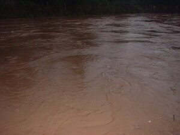

baggiyu 
/baggiu/
Var. bagiyu
v_rt.
“flood”
1.
n.
flood (for the water to become bigger)
Eng. flood, a; high water
Tag. bahâ
Ceb. bahà
Ilo.: layós
OCM: Ethnometeorology (821), Climate (132)
DDP: Flood (1.1.3.7), River (1.3.1.3)
Online dict status: -
Usage level: M
vi.
for water (egbaggiyu, migbaggiyu/imbaggiyu, baggiyu, actor & theme, eg><ø-) to rise and overflow, flooding a place (egbaggiyuwan, imbaggiyuan/migbaggiyuan/pigbaggiyuan, location, eg><an-)
Ka baggiyu iyan ka pegdakel te weyig piru egkeyitabu dè seini ke timpu te ting-uran. Kenè dè degma ne peglaneg ka ngaran kayi su egkaayun degma ne sika se masumpit ne uran we ke amana ne salahapun ne egdumaan te nenekali ne kalamag. Sikan naa ka kenè amana egmakaleug-leug ka me etew su egkahaldek ma ke egdakel ka weyig wey kenad e sikandan egpekeuli.
Kenè kew leug-leug kuntee diyè te deyipag te Salug su kema ke egbaggiyu ka weyig.
Don't go across to the opposite side of the Salug river today, because the water might be overflowing (the banks)
Syn. tihis
Eng. overflow; rise; flood
OCM: Climate (132), Ethnophysics (822)
DDP: Flood (1.1.3.7), River (1.3.1.3), Flow (1.3.2.1)
Online dict status: -
Usage level: M
2.
vi.
for a woman (egbaggiyu, migbaggiyu/imbaggiyu, baggiyu, actor, eg><ø-) to be menstruating
Igkeyitabu seini te timpu te ting-uran wey ke due dakel ne uran ne egkeyitabu. Iyan ka pegdakel te weyig ne due egkeyitabu ne egpanlunew wey masalig ka egkengalened iling te kayu, wey te nekey rè iya ne diyè te ilis te weyig.
Cult. a euphemism
Eng. menstruation
Online dict status: -
Usage level: R
Updated by: RJH,AAA,TME,QDL,NJK,QDL,NJK,RAA,QDL
Last updated: 06/Feb/2010
This page last updated: 19/May/2012
Copyright © 2009-2010, Matigsalug Language Christian Association, Inc